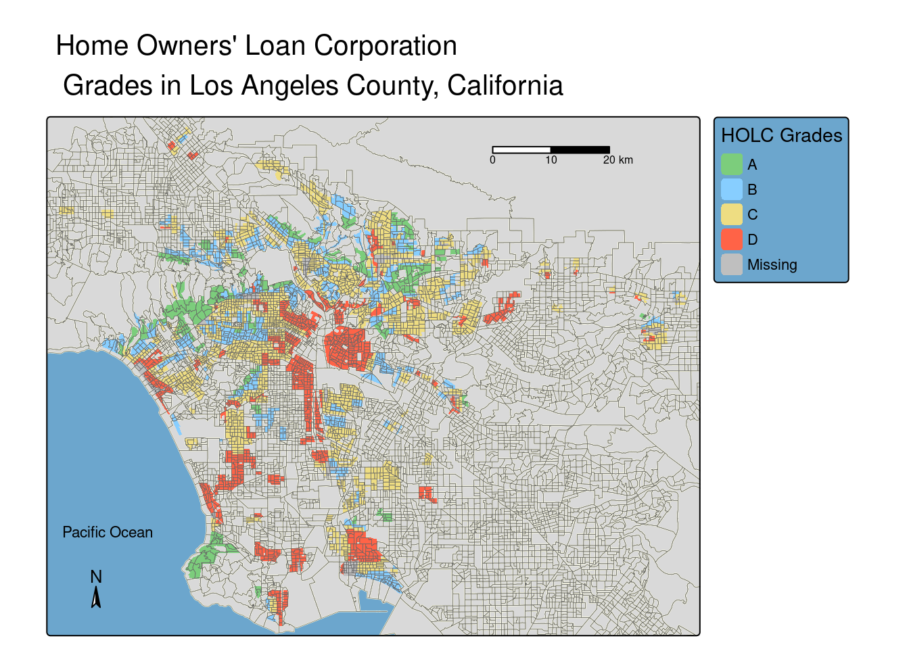
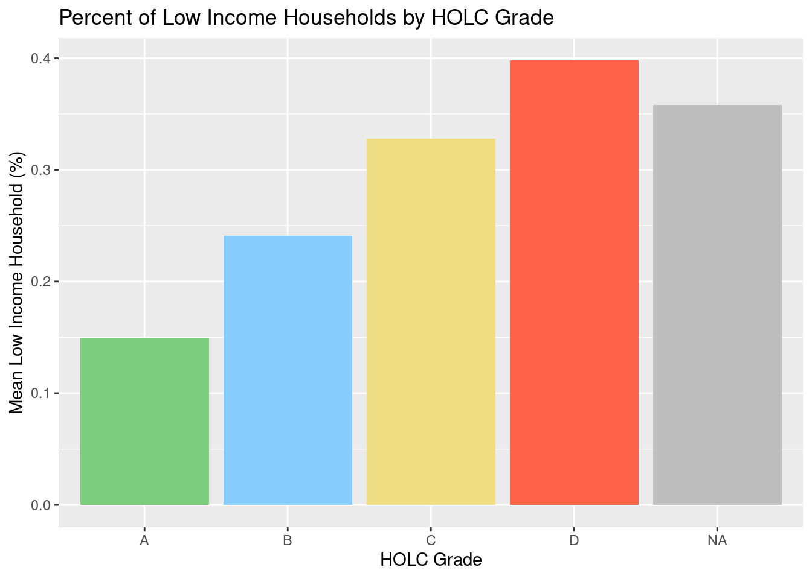
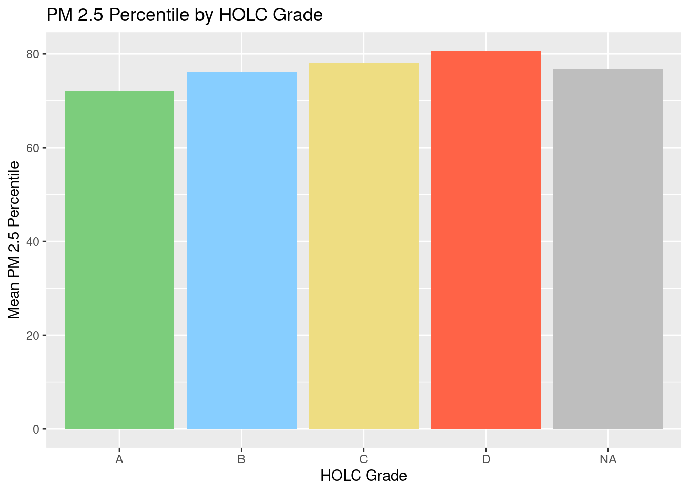
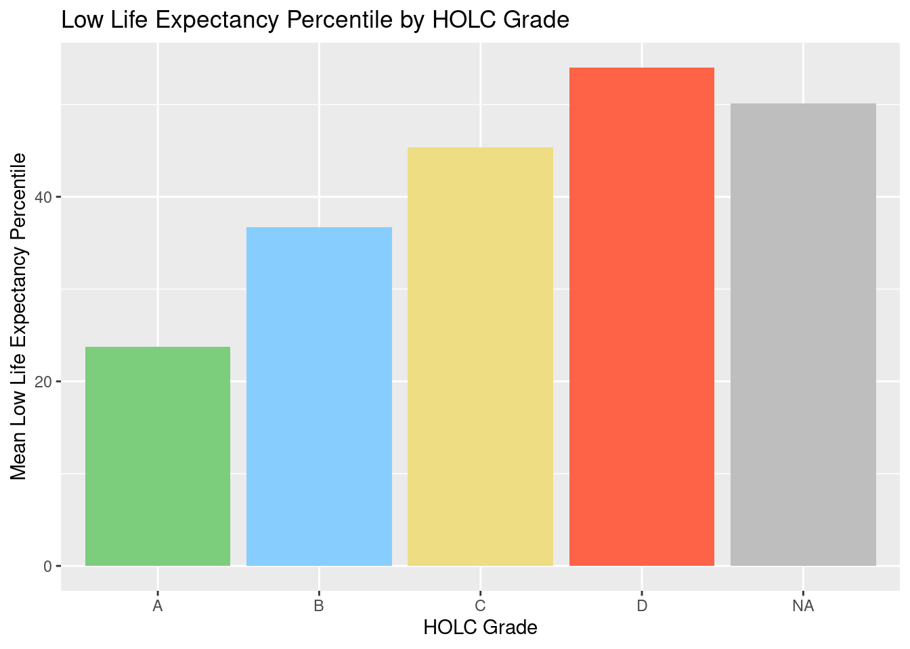

Show the code
library(sf)
library(tidyverse)
library(tmap)
library(here)
library(kableExtra)December 7, 2024
# Filter for just California for a basemap
california <- ejscreen %>%
dplyr::filter(ST_ABBREV == "CA" & ID != "060379903000" & ID != "060379902000") %>%
janitor::clean_names()
# Filter to specifically LA to make the table
los_angeles <- california %>%
dplyr::filter(cnty_name %in% c("Los Angeles County"))[1] FALSE# Transform the holc to match the ejscreen LA data
holc_transform <- st_transform(holc, crs = st_crs(los_angeles))
# Check to see if it worked
if(st_crs(holc_transform) == st_crs(los_angeles)){
print("it's a match!")
} else {
print("still not a match")
}[1] "it's a match!"tm_shape(california, bbox = holc_transform) +
tm_polygons(col = "beige", border.alpha = 0) +
tm_shape(holc_transform) +
tm_fill("grade",
palette = c("A" = "palegreen3",
"B" = "skyblue1",
"C" = "lightgoldenrod",
"D" = "tomato"),
title = "HOLC Grades") +
tm_shape(california, bbox = holc_transform) +
tm_borders(lwd = 0.3, col = "black", alpha = 0.6) + tm_scale_bar(position = c("right", "top")) +
tm_layout(frame = TRUE,
main.title = "Home Owners' Loan Corporation \n Grades in Los Angeles County, California",
main.title.position = c("center", "top"),
main.title.size = 1,
legend.outside = TRUE,
legend.outside.position = "right",
bg.color = "skyblue3") +
tm_compass(position = c("left", "bottom"),
size = 1) +
tm_credits("Pacific Ocean", col = "black", position = c(0.016, .18))
holc_ej <- st_join(holc_transform, los_angeles, join = st_intersects) %>%
group_by(grade)
census <- holc_ej %>%
summarize(percent = n()/nrow(los_angeles)*100) %>%
select(grade, percent) %>%
st_drop_geometry
kableExtra::kable(census,
col.names = c('Grade', 'Percentage'),
caption = "Percentage of Census Block Groups by HOLC Grade")| Grade | Percentage |
|---|---|
| A | 6.814388 |
| B | 18.303233 |
| C | 41.705873 |
| D | 19.729853 |
| NA | 4.492336 |
if (sum(is.na(holc_ej$lowincpct)) > 0) {
warning("There are NAs, better take them out!")
} else {
print("All good!")
}[1] "All good!"if (sum(is.na(holc_ej$p_pm25)) > 0) {
warning("There are NAs, better take them out!")
} else {
print("All good!")
}[1] "All good!"if (sum(is.na(holc_ej$p_lifeexppct)) > 0) {
warning("There are NAs, better take them out!")
} else {
print("All good!")
}Warning: There are NAs, better take them out!low_inc <- holc_ej %>%
group_by(grade) %>%
summarise(low_inc_percent = mean(lowincpct)) %>%
select(grade, low_inc_percent) %>%
st_drop_geometry()
ggplot(low_inc) +
geom_col(aes(x = grade, y = low_inc_percent),
fill = c("palegreen3", "skyblue1", "lightgoldenrod", "tomato", "grey")) +
labs(x = "HOLC Grade",
y = "Mean Low Income Household (%)",
title = "Percent of Low Income Households by HOLC Grade")
pm25 <- holc_ej %>%
group_by(grade) %>%
summarise(pm_25 = mean(p_pm25)) %>%
select(grade, pm_25) %>%
st_drop_geometry()
ggplot(pm25) +
geom_col(aes(x = grade, y = pm_25),
fill = c("palegreen3", "skyblue1", "lightgoldenrod", "tomato", "grey")) +
labs(x = "HOLC Grade",
y = "Mean PM 2.5 Percentile",
title = "PM 2.5 Percentile by HOLC Grade")
low_life <- holc_ej %>%
group_by(grade) %>%
summarise(low_life_expectancy = mean(p_lifeexppct, na.rm = TRUE)) %>%
select(grade, low_life_expectancy) %>%
st_drop_geometry()
# dropped NAs in order to calculate the mean
ggplot(low_life) +
geom_col(aes(x = grade, y = low_life_expectancy),
fill = c("palegreen3", "skyblue1", "lightgoldenrod", "tomato", "grey")) +
labs(x = "HOLC Grade",
y = "Mean Low Life Expectancy Percentile",
title = "Low Life Expectancy Percentile by HOLC Grade")
After reviewing the results of the map, table, and three figures, there are a few interesting aspects that stick out to me. For one, there are far more ‘C’ graded regions than anything else, but the figure show that there is more low income households, PM 2.5 (by a small margin), and low life expectancy in the ‘D’ areas. This is interesting because it means those factors are heavily dense in the ‘D’ regions even if it less than double the size of ‘C’. The map also shows that the grades are relatively spread out, and the grades are not just in four quadrants. I also noticed that my undergrad university (UCLA) is located in an ‘A’ area which makes sense because the surrrounding neighborhood continues to be very affluent today. The PM 2.5 is pretty similar across the county, no matter the grade, which leads me to believe it is bigger issue than the size of a census redlined region.
if(st_crs(holc_transform) == st_crs(birds_2022)){
print("it's a match!")
} else {
print("not a match")
}[1] "not a match"birds_transform <- st_transform(birds_2022, crs = st_crs(holc_transform))
if(st_crs(holc_transform) == st_crs(birds_transform)){
print("it's a match!")
} else {
print("still not a match")
}[1] "it's a match!"My results do not align with the ‘Bird Biodiversity Reports Reflect Cities’ Redlined Past’. Unlike the paper, my bar plot shows that regions with an ‘A’ grade actually have the least amount of bird observations, and ‘C’ has the most. However, this makes sense because as seen in the earlier table, there are many more areas graded as ‘C’ compared to ‘A’, so there would be more birds seen in ‘C’. If the bird observations were weighted based on the density of the grades, the plot might align more closely with the results of the article.
| Data | Citation | Link |
|---|---|---|
| Global Biodiversity Information Facility | GBIF.org (13 October 2024) GBIF Occurence Download | [Species API](https://techdocs.gbif.org/en/openapi/v1/species) |
| HOLC Redlining Data | Nelson, R. K., Winling, L, et al. (2023). Mapping Inequality: Redlining in New Deal America. Digital Scholarship Lab. https://dsl.richmond.edu/panorama/redlining. | [Mapping Inequality](https://dsl.richmond.edu/panorama/redlining/data) |
| EJScreen: Environmental Justice Screening and Mapping Tool | United States Environmental Protection Agency. 2024 version. EJScreen. Retrieved: 10/4/24 from www.epa.gov/ejscreen | [EJScreen Data](https://www.epa.gov/ejscreen/download-ejscreen-data) |
@online{wong2024,
author = {Kimmy Wong},
title = {Environmental {Redlining}},
date = {2024-12-07},
url = {https://kimberleewong.github.io/posts/environmental_redlining/environmental_redlining_blog.html},
langid = {en}
}